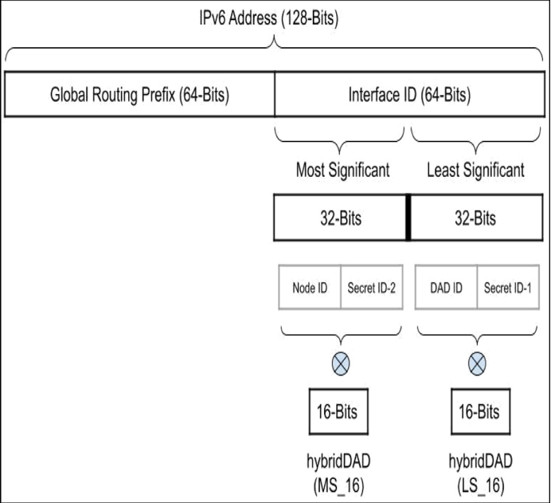

Building IPv6 Addressing Scheme using Hybrid Duplicate Address Detection to Prevent Denial of Service Attack
1. Duplicate Address Detection (DAD)
Whenever a host is assigned an IPv6 address, it performs a DAD check to ensure that no other hosts are already using or vying for the same address. The DAD process typically includes the following steps:
- The host generates an IPv6 address and marks it as “tentative”.
- The host sends a Neighbor Solicitation (NS) message through the Neighbor Discovery Protocol to check if any other device on the network is already using the address.
- If no Neighbor Advertisement (NA) message is received within a certain time, or the response indicates no conflict, the host can confirm that the address is unique and start using it.
- If an NA message is received, indicating that the address is already in use, the host must choose another address or take other actions to resolve the conflict.
Static IP Address: A static IP address is a long-term assigned IP address for a specific device that does not change over time.
Current defenses against DAD attacks have significant flaws, such as excessive computation, lack of scalability, and the need to modify the protocol.
2. Denial of Service (DoS) and Man-In-The-Middle (MITM) Attacks
Denial of Service (DoS) Attack
A DoS attack is a type of attack that aims to make network services unavailable. The goal is to prevent the target server, service, or network from processing legitimate user requests. This is often achieved by:
- Traffic Overload: The attacker sends massive amounts of traffic to the target server, saturating the network bandwidth so that legitimate traffic cannot be processed.
- Resource Exhaustion: The attacker exploits specific vulnerabilities in the server or service, causing it to consume excessive resources (e.g., CPU, memory), which prevents it from responding to legitimate requests.
- Service Denial: The attacker sends specific requests that cause the service to crash or enter a state where it can no longer handle other requests.
Man-In-The-Middle (MITM) Attack
MITM attacks involve an attacker inserting themselves between two communicating parties. The attacker can intercept, modify, and forward the data between them, often without either party knowing. This type of attack usually follows these steps:
- Intercepting Communication: The attacker intercepts data being transmitted between two parties, for example, by creating a fake Wi-Fi network.
- Impersonation: The attacker pretends to be a legitimate party to establish a trusted connection with one of the communication parties.
- Data Tampering: The attacker can read, modify, or inject malicious data into the communication without detection.
- Session Hijacking: The attacker may completely take over the session of one or both parties and perform unauthorized actions.
3. Network Requirements for Hybrid DAD
The hybrid DAD method, demonstrated in this study, reduces the risk of DoS attacks during the IPv6 setup process. To enhance privacy and security, IPv6 addresses are typically divided into two parts: the DAD ID (usually the network prefix) and the Node ID (often derived from the device’s MAC address, but can also be randomly generated to improve privacy). This method, known as Privacy Extensions for Addresses, reduces the risk of exposing user privacy through IP addresses.
- Address Predictability: If the Node ID is fixed or predictable (such as those based on MAC addresses), attackers can more easily guess or track a device’s IP address. Using randomly generated Node IDs helps mitigate this risk.
- Multicast Listening: During the DAD process, address queries are sent using multicast messages, which increases the attack surface. Attackers could potentially listen to these multicast requests to identify new devices on the network or prevent legitimate devices from using their IP addresses by sending false Neighbor Advertisement messages.
- DAD Conflicts: Attackers can intentionally respond to all DAD queries, causing address configuration failures. This type of attack is known as a DAD conflict attack.
4. The Mechanism of Hybrid Duplicate Address Detection

IPv6 addresses are 128 bits long and are typically divided into two 64-bit parts:
- Global Routing Prefix (GRP): 64 bits used for network routing.
- Interface Identifier (IID): 64 bits used to uniquely identify an interface on the local network.
The IID is further divided into two 32-bit sections:
- Most Significant Bits (MS-32)
- Least Significant Bits (LS-32)
Each of these sections is further divided into two 16-bit parts for hybrid DAD calculation:
-
LS-32 is split into:
- DAD ID (16 bits)
- Secret ID-1 (16 bits)
-
MS-32 is split into:
- Node ID (16 bits)
- Secret ID-2 (16 bits)
Hybrid DAD Calculation
In the DAD process, XOR operations are used to calculate hybrid DAD values to improve security:
- For Neighbor Solicitation (NS) frames, the LS-16 value is calculated by XORing the DAD ID with Secret ID-1.
- For Neighbor Advertisement (NA) frames, when a duplicate address is detected, established nodes respond with an NA frame carrying the hybrid MS-16 value, which is the XOR of the Node ID with Secret ID-2.
This technique increases privacy and security during address configuration by making it harder for attackers to predict or infer the actual interface identifier.
Example:
Assume the IPv6 Interface ID (IID) is 0000:8a2e:0370:7334.
-
MS-32:
0000:8a2e- Node ID:
0000 - Secret ID-2:
8a2e
- Node ID:
-
LS-32:
0370:7334- DAD ID:
0370 - Secret ID-1:
7334
- DAD ID:
XOR Calculation:
- MS-16 (Hybrid):
0000 XOR 8a2e = 8a2e - LS-16 (Hybrid):
0370 XOR 7334 = 7044
5. Algorithm 1: Hybrid DAD IP Configuration Process
- Initialize
hybrid DAD_countandhybrid DAD_timeout. - Generate a new IP address: the device attempts to use
0000:8a2e:0370:7334. - Broadcast NS_hybrid DAD: the device sends an NS request with the hybrid LS-16 value (
7044). - Receive NA_hybrid DAD: the device waits for responses from other devices.
- Loop Detection:
- If an NA message is received from an established node and the MS-16 value (
8a2e) matches, it indicates a potential address conflict. - If the conflict persists after reaching the
thresholdDAD(max attempts), the device regenerates a new MS value and repeats the process.
- If an NA message is received from an established node and the MS-16 value (
- Timeout or Threshold: if conflicts persist or timeout occurs, the device broadcasts a network error message and reports failure.
6. Algorithm 2: Hybrid DAD Verification
- Receive NS_hybrid DAD: the device receives an NS request from another device and checks the LS-16 value.
- Verify LS-16:
- If the LS-16 value (
7044) matches the local configuration, the device sends an NA_hybrid DAD response, indicating an address conflict. - If not, the request is discarded, indicating the address is unique.
- If the LS-16 value (
7. Results and Communication
- If the DAD process succeeds with no conflicts, the device confirms that the IP address
0000:8a2e:0370:7334is unique and starts using it for communication. - If there are conflicts, the device needs to regenerate either the Node ID or DAD ID and recalculate the XOR values until no conflicts are detected.
This process ensures the uniqueness of IPv6 addresses in the network and, with the added security of hybrid DAD (using XOR and Secret IDs), enhances the privacy and security of network communication by preventing common attacks like address spoofing and DAD conflicts.